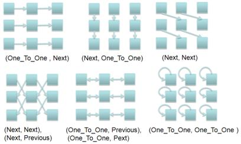
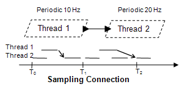

(1) Port connections represent directional transfer of data and control between two concurrently executing components, i.e., between threads, processors, and devices. They are feature connections, whose source and destination are limited to ports and data access.
(2) These connections are semantic port connections. A semantic port connection is determined by a sequence of one or more individual port connection declarations that follow the component containment hierarchy in a fully instantiated system from an ultimate source to an ultimate destination. In a partial AADL model the ultimate source and destination of a semantic port connection are the ports of leaf components in the containment hierarchy, i.e., a thread group, process, or system without subcomponent.
(3) Semantic port connections are illustrated in Figure 14. The ultimate source of a semantic port connection is an outgoing port of a thread, virtual processor, processor, or device component, or is a data component. The ultimate destination of a semantic port connection is an incoming port of a thread, virtual processor, processor, or device component, or is a data component. In the case of a bidirectional connection between in out ports either port can be the ultimate source or destination.
(4) Port connection declarations follow the containment hierarchy of threads, thread groups, processes and systems, or devices, processors, and systems. An individual port connection declaration links an outgoing port of one subcomponent to an incoming port of another subcomponent, i.e., it connects sibling components at the highest level in the component hierarchy required for the connection. Alternatively, a port connection declaration maps an outgoing port of a subcomponent to an outgoing port of a containing component or an incoming port of a containing component to an incoming port of a subcomponent. In other words, these connections traverse up and down the containment hierarchy.
Figure 14 Semantic Port Connection
(5) Semantic port connections also represent the sampling of a data component content by a data or event data port, and updating a data component with the output of a data or event data port. In other words, the ultimate source or the ultimate destination of a semantic port connection, but not both, can be a data component.
(6) Semantic port connections may also route a raised event to a modal component through a sequence of connection declarations. A mode transition in such a component is the ultimate destination of the connection, if the mode transition names an incoming event port in the enclosing component, or an outgoing event port of one of the subcomponents (see Section 12).
(7) Semantic port connections may exist between arrays of component instances. In this case, the Connection_Pattern or Connection_Set property specifies which source array elements have a semantic connection to which destination array element (see section 9.2.3 for more detail).
(8) This section defines the concepts of departure and arrival times of port connection transmission for each type of port connection. The transfer semantics between periodic threads can be defined such that they ensure deterministic sampling of data. All other communication can be defined to be sampling or data driven. The inputs and outputs can be specified to occur at dispatch, any time during execution, at completion, or at deadline.
Syntax
port_connection ::= port source_port_connection_reference connection_symbol destination_port_connection_reference port_connection_refinement ::= port port_connection_reference ::= -- port in the component type component_type_port_identifier | -- port in a subcomponent subcomponent_identifier . port_identifier | -- port element in a feature group of the component type
component_type_feature_group_identifier . element_port_identifier
|
-- data element in aggregate data port
component_type_port_identifier . data_subcomponent_identifier
|
-- requires data access in the component type
component_type_requires_data_access_identifier
|
-- data subcomponent
data_subcomponent_identifier
|
-- data component provided by a subcomponent
subcomponent_identifier . provides_data_access_identifier
|
-- data access element in a feature group of the component type
component_type_feature_group_identifier . element_data_access_identifier
|
-- access to element in a data subcomponent
data_subcomponent_identifier .data_subcomponent_identifier
|
-- processor port
processor . processor_port_identifier
|
-- component itself as event or event data source
self . event_or_event_data_source_identifier
-- Note: data port, event data port, and event port connections
-- are replaced by port connections in AADL V2
Naming Rules
(N1) The connection identifier in a port connection refinement declaration must refer to a named port or feature connection declared in an ancestor component implementation.
(N2) A source or destination reference in a port connection or port connection refinement declaration must reference a port declared in the component type, a port of one of the subcomponents, or a port that is an element of a feature group in the component type, or it must refer to a requires data access in the component type, a provides data access in one of the subcomponents, or a data subcomponent.
(N3) The subcomponent reference may also consist of a reference to a subcomponent array.
(N4) The event or event data identifier of event source specifications (self.event_or_event_data_identifier) must not conflict with defining identifiers in the namespace of the component that contains the connection referencing the event source.
Legality Rules
(L1) In the case of a directional port connection the connection end representing the source of the flow must be the source of the connection and the connection end representing the destination of the flow must be the destination of the connection.
(L2) In the case of a bidirectional port connection either connection end can be the source. If the bidirectional connection has directional connection ends, then the flow is determined by the direction of the connection ends. In the case of ports it is the port direction and in the case of data access features it is the access right.
(L3) If the source connection end is a data access feature it must have read access rights; if the destination connection end is a data access feature it must have write access rights.
(L4) The feature identifier of a subcomponent reference may refer to a feature array, if the subcomponent is a thread, device, or processor.
(L5) The following are acceptable sources and destinations of port connections. The left column shows connections between ports, while the right column shows connection between ports and data components.
|
event port -> event port data port -> data port, event data port, event port event data port -> event data port, data port, event port
|
data, data access -> data port, event data port, event port data port, event data port -> data, data access
|
The direction of the source port of a port connection declaration must be compatible with the direction declared for the destination port as defined by the following rules:
(L6) If the port connection declaration represents a connection between ports of sibling components, then the source must be an outgoing port and the destination must be an incoming port. If the source connection end is a data access feature, then it must be a provides access feature; if it is a destination connection end it must be a requires access feature.
(L7) If the port connection declaration represents a connection between ports up the containment hierarchy, then the source and destination must both be outgoing ports. If the source connection end is a data access feature, then it must be a provides access feature; if it is a destination connection end it must be a requires access feature.
(L8) If the port connection declaration represents a connection between ports down the containment hierarchy, then the source and destination must both be incoming ports. If the source connection end is a data access feature, then it must be a requires access feature; if it is a destination connection end it must be a provides access feature.
(L9) The individual connections of a semantic port connection must be bidirectional or have the same direction. The direction of the connection is determined by the direction of the source and destination feature and by the direction of the connection declarations.
(L10) Self.<identifier> must only be referenced as the source of a connection.
(L11) A data port cannot be the destination of more than one semantic port connection unless each semantic port connection is contained in a different mode.
(L12) A semantic connection cannot contain connection declarations with both immediate and delayed Timing property values.
(L13) For connections between data ports, event data ports and data access, the data classifier of the source port must match the data type of the destination port. The Classifier_Matching_Rule property specifies the rule to be applied to match the data classifier of a connection source to the data classifier of a connection destination.
(L14) The following rules are supported:
· Classifier_Match: The source data type and data implementation must be identical to the data type or data implementation of the destination. If the destination classifier is a component type, then any implementation of the source matches. This is the default rule.
· Equivalence: An indication that the two classifiers of a connection are considered to match if they are listed in the Supported_Classifier_Equivalence_Matches property. Acceptable data classifier matches are specified as Supported_Classifier_Equivalence_Matches property with pairs of classifier values representing acceptable matches. Either element of the pair can be the source or destination classifier. Equivalence is intended to be used when the data types are considered to be identical, i.e., no conversion is necessary. The Supported_Classifier_Equivalence_Matches property is declared globally as a property constant.
· Subset: A mapping of (a subset of) data elements of the source port data type to all data elements of the destination port data type. Acceptable data classifier matches are specified as Supported_Classifier_Subset_Matches property with pairs of classifier values representing acceptable matches. The first element of each pair specifies the acceptable source classifier, while the second element specifies the acceptable destination classifier. The Supported_Classifier_Subset_Matches property is declared globally as a property constant. A virtual bus or bus must represent a protocol that supports subsetting, such as OMG DDS.
· Conversion: A mapping of the source port data type to the destination port data type, where the source port data type requires a conversion to the destination port data type. Acceptable data classifier matches are specified as Supported_Type_Conversions property with pairs of classifier values representing acceptable matches. The first element of each pair specifies the acceptable source classifier, while the second element specifies the acceptable destination classifier. The Supported_Type_Conversions property may be declared globally as a property constant. A virtual bus or bus must support the conversion from the source data classifier to the destination classifier.
(L15) If more than one port connection declaration in a semantic port connection has a property association for a given connection property, then the resulting property values must be identical.
(L16) A processor port specification must only be used in event connections within threads and subprograms.
Consistency Rules
(C1)There cannot be cycles of immediate connections between threads, devices, and processors.
(C2)The processor port identifier of a processor port specification (processor.processor_port_identifier) must name a port of the processor that the thread is bound to.
(C3)The Supports_Classifier_Subset_Matches property may be associated with a bus or virtual bus. This specifies the subset matches a particular protocol supports. Subset matches of connections bound to such a virtual bus or bus must be supported by the respective virtual bus or bus.
(C4)The Supports_Type_Conversions property may be associated with a bus or virtual bus. This specifies the subset matches a particular protocol supports. Subset matches of connections bound to such a virtual bus or bus must be supported by the respective virtual bus or bus.
Standard Properties
Timing : enumeration (sampled, immediate, delayed) => sampled
Connection_Pattern: list of list of Supported_Connection_Patterns
Connection_Set: list of Connection_Pair
Transmission_Type: enumeration ( push, pull )Required_Connection_Quality_Of_Service : inherit list of Supported_Connection_QoS
Allowed_Connection_Binding_Class:
inherit list of classifier(processor, virtual processor, bus, virtual bus, device, memory)
Allowed_Connection_Binding: inherit list of reference (processor, virtual processor, bus, virtual bus, device, memory)
Not_Collocated: record (
Targets: list of reference (data, thread, process, system, connection);
Location: classifier ( processor, memory, bus, system ); )
Actual_Connection_Binding: inherit list of reference (processor, virtual processor, bus, virtual bus, device, memory)
Semantics
(9) A semantic port connection represents directed flow of data and control between threads, processors and devices. In the case of event or event data ports the ultimate destination can be a mode transition of a component.
(10) A port connection can refine a feature connection. A port connection can be refined by changing the direction from bidirectional to directional, by adding a in modes subclause, and by adding property associations for the connection in a connection refinement declaration.
(11) A port connection declared with the optional in_modes_and_transitions subclause specifies whether the connection is part of specific modes or is part of the transition between two specific modes. The detailed semantics of this subclause are defined in Section 12.
(12) While in a given mode, transmission over a port connection only occurs if the connection is part of the current mode.
(13) During a mode switch, transmission over a data port connection only occurs at the actual time of mode switch if the port connection is declared to apply to the transition between two specific modes. The actual mode switch initiates transmission. This allows data state to be transferred between threads active in different modes. Similarly, for event or event data ports it allows for transfer of queue content.
(14) Port connections may refer to an event source specification (self.event or event data name). An event source specification indicates that the component itself is the source of an event. In the case of a thread this may be due to a Send_Output system call or due to an event raised by the underlying runtime system, i.e., the processor. For all components it may represent the fact that a component fault is the source of an event or a message (event data port) with fault information to support diagnostics, as specified by the Error Model Annex (see Annex Document C).
(15) A thread or device may be connected to the port of a processor. For example, a health monitoring thread may receive the heart beat events from several processors. In addition, a port connection may refer to the port of the processor that an application software component is bound to (processor . <portname> ). If a processor or device is the data connection source, then the transmission is initiated and completed when the destination thread or device is dispatched. In this case a data port can model a processor or device register that is sampled by a thread or device. If a device or processor is the event connection source, then the occurrence of an interrupt represents the initiation of an event transmission.
(16) AADL supports the following port connection declarations:
· Event port, data port, event data port, data (data access) -> event port: port output or written data is recognized as event and queued in the event port.
· Event data port, data port, data (data access) -> event data port: data output or written data is transferred and received as event data in a queued port.
· Data port, event data port, data (data access) -> data port: Data output or written data is transferred and available upon receipt as most recent value of a data port variable, i.e., the data port samples data.
(17) A port connection to a mode transition is declared by naming the event port or event data port in the mode transition declaration (see Section 12).
(18) The AADL supports n-to-n connectivity for event and event data ports. A port may have multiple outgoing connections, i.e., its content is transmitted to multiple destinations. This means that each destination port receives an instance of the event, or event data being transmitted. Similarly, event and event data ports can support multiple incoming connections resulting in sequencing and possibly queuing of incoming events and event data.
(19) For example, multiple threads may connect their outgoing event data port to an enclosing process event data port (fan-in), this port is connected to an incoming process event data port, and this port is connected to multiple thread ports (fan-out). This results in semantic connections from all ultimate source threads to all ultimate destination threads. If the port connections from multiple threads are declared to a feature group in the enclosing process, a feature group connection to a second process, and port connections from the feature group of the second process to its contained threads, the result is a collection of pair wise semantic connections from the ultimate source threads to the ultimate destination threads.
(20) Data ports are restricted to 1-n connectivity, i.e., a data port can have multiple outgoing connections, but only one incoming connection per mode. Since data ports hold a single data state value, multiple incoming connections would result in multiple sources overwriting each other’s values in the destination port variable.
(21) Data ports can be used to model aggregate data ports. If data ports are declared with a data component type that has its data subcomponents externally visible through provides data access declarations, then a separate connection can be declared to each of these elements in the port of the enclosing component. For example, several periodic threads can deliver their data port results to a data port of the enclosing process that represents the aggregate of those data values as elements of its data component type. The set of threads whose output is considered are those whose dispatch aligns. Once they have produced their output, the aggregate output is sent to the recipients. The time at which the send is initiated is the latest completion of the source threads, i.e., max(tcomplete), where tcomplete represents the value of t at completion time. Similarly, the recipient thread may receive an element of the aggregate data port of its enclosing process, or a subset of the elements. The latter is modeled by the classifier of the recipient data port satisfying the Subtype or Subset matching rules of the Classifier_Matching_Rule property.
(22) Feature groups may have multiple outgoing and incoming connections unless any ports that are elements of a feature group place additional restrictions. A destination feature group may be a subset of the source feature group. Acceptable matches are specified via the Classifier_Matching_Rule property with values Subtype or Subset.
(23) If a component has an in out port, this port may be the destination of a connection from one component and the source of a connection to another component. This can be expressed by two directional port connections. Bidirectional flow between two components is represented by a bidirectional port connection between the in out ports of two components.
(24) The Connection_Pattern property specifies how semantic connections are replicated if the ultimate source and ultimate destination are component arrays. The ultimate source or destination is a component array if it or any enclosing component involved in the connection is declared as subcomponent array. The dimensions of the ultimate source and destination array is the sum of dimensions of the ultimate source/destination component and those of any enclosing component involved in the semantic connection. The order of the dimensions is from the ultimate source/destination component up the containment hierarchy.
(25) The ultimate source or ultimate destination of a semantic connection may be a feature array. In this case, the dimension of the feature array is treated as an additional dimension (the first dimension if multiple dimensions exist).
(26) The Connection_Pattern property is a multi-valued list of dimension pattern values. A dimension pattern value is a list itself with one value for each of the dimensions of component arrays. The number of dimension pattern values must correspond to the larger dimensionality of the source or destination component array. Each value specifies the intended connectivity for one dimension of the array. The following connection patterns are predefined for an array dimension:
· An All_To_All value indicates that each array element of the ultimate source has a semantic connection to each element in the ultimate destination (broadcast). This connection pattern applies even if the two arrays have different sizes.
· A One_To_One value indicates that elements of the ultimate source array and the ultimate destination array have pair wise semantic connections (Identity). This property value applies if the two arrays have identical sizes. If one range is a subset of the other then only the subset starting with the first element is connected.
· A Next or Previous value indicates that elements of the ultimate source array dimension are connected to the next (previous) element in the ultimate destination array dimension. The last element does not connect in the case of next and the first element does not connect in the case of previous. This property value applies if the two arrays have identical sizes. Note that a Next value for two dimensions results in a diagonal connection.
· A Cyclic_Next or Cyclic_Previous value indicates that elements of the ultimate source array dimension are connected to the next (previous) element in the ultimate destination array dimension. In the case of Cyclic_Next the last element in the array connects to the first, and vice versa for Cyclic_Previous. This property value applies if the two arrays have identical sizes. Note that a Next value for two dimensions results in a diagonal connection.
· A One_to_All value indicates that a single element of the ultimate source has a semantic connection to each element in the ultimate destination. This connection pattern is used when the destination array has a higher dimensionality than the source array. It specifies that any connection according to the other dimensions is being replicated for each element in this destination dimension, i.e., the outputs are broadcast in this dimension.
· An All_to_One value indicates that each array element of the ultimate source has a semantic connection to a single element in the ultimate destination. This connection pattern is used when the destination array has a lower dimensionality than the source array. It specifies that any connection according to the other dimensions is being replicated for each element in this source dimension, i.e., the outputs of this dimension are connected to a single fan-in point.
(27) A list of Connection_Pattern values permits more complex patterns to be defined. Figure 15 illustrates the use of connection patterns in a two-dimensional array. In more complex patterns, the value of ((Next,One_To_One), (One_To_One,Next), (Previous,One_To_One), (One_To_One,Previous)) indicates connections to all horizontal and vertical neighbors, while ((Next,One_To_One), (One_To_One,Next), (Previous,One_To_One), (One_To_One,Previous), (Previous,Previous), (Next,Previous), (Previous,Next), (Next,Next)) includes diagonal neighbors as well.

Figure 15 Connection Patterns in 2-Dimensional Component Array
(28) The Connection_Set property specifies each semantic connection between elements of the source component array and destination component array individually. The property has a list of pairs of source and destination array indices. A source or destination array index consists of a list aadlinteger values, one for each array dimension. The first index is the value 1. The values for the Connection_Set property may be generated by a tool based on pattern specification that is an annex extension of the core AADL.
(29) If both Connection_Pattern values and Connection_Set values are specified, the set of semantic connections is the union of both.
Examples
-- The first sensor array in Figure 15
device sensor
features
Incoming: in event data port;
Outgoing: out event data port;
end sensor;
system sensornet
end sensornet;
system implementation sensornet.impl
subcomponents
sensorarray: device sensor [10][10];
connections
rows: port sensorarray.outgoing -> sensorarray.incoming
{ Connection_Pattern => ((One_To_One, Next));};
end sensornet.impl;
(30) The content of incoming data, event, or event data ports is frozen for the duration of a thread execution, i.e., the port variable content as it is accessible to the component application code is not affected by the arrival of new data, events or event data. By default the input is frozen at the time of the dispatch, i.e., at the time when t = 0. If the Input_Time property is specified it is determined by the property value as specified in Section (14). Any input arriving after the input time becomes available at the next input time. This may be the input time for the next dispatch, or the next input time in the same dispatch, if multiple input time values are specified.
(31) The output is transferred to other components at completion time, i.e., c = ccomplete, or as specified by the value of the Output_Time property (see Section (14)). Output may be sent multiple times during the same dispatch; this is specified by multiple output time values.
(32) Event and event data ports may trigger the dispatch of a Sporadic, Aperiodic, or Timed thread as specified in Section 5.4.2. The content of data, event, and event data ports is processed at the dispatch rate. In case of event and event data ports, the input is the queued set of items at Input_Time; each arrived event or event data is only processed once, and items can be processed one per dispatch or in batches.
(33) Arrival of events on event ports can also trigger a mode switch if the event port is named in a mode transition originating in the current mode (see Section 12). Events that trigger mode transitions are not queued at event ports.
(34) In case of incoming data ports, the input is the most recently arrived value at input time. This may be the same as the value at the previous dispatch. The dispatch rate determines the rate at which a data stream is sampled.
(35) An incoming data stream may be sampled periodically by a periodic thread, or it may be sampled at the rate at which Aperiodic, Sporadic, Hybrid, and Timed threads are dispatched. In this case the sampling thread samples the data stream at its dispatch rate independent of the dispatch and completion of the source thread. If the incoming port is a data port the most recent value is available. If the incoming port is an event port or event data port the content of the port queue may be sampled.
(36) The actual transfer of data to data ports as ultimate destination is affected by the Transfer_Type property, which specifies whether the ultimate source or ultimate destination initiate the transfer, with the default being the ultimate source.
(37) The actual transfer of event data and events is affected by the Fan_Out_Policy property of ports with multiple outgoing connection declarations (see Section 9.2.6).
(38) The source of a data stream may be a data or event data port of a periodic thread or device. When this data stream is sampled by a periodic thread or device, sampling, oversampling, and undersampling may occur non-deterministically due concurrency and preemption. This can lead latency jitter in the data and instability in control system behavior. AADL supports deterministic sampling of data streams between a periodic source and destination thread by specifying immediate and delayed timing of port connections.
(39) Sampled data port communication occurs when a periodic destination thread or device with an incoming data port samples a data stream. In a sampling semantic connection the recipient samples the output of the sender at dispatch time or as specified by the Input_Time property of the recipient port. Since this sampling occurs independent of the dispatch and completion of the source thread the data stream is sampled non-deterministically as illustrated in Figure 16. It shows two threads executing concurrently at 10 Hz and 20 Hz on different processor cores. The output of the first dispatch of Thread 1 is received by the second dispatch of Thread 2. The output of the second dispatch of Thread 1 is received by the fifth dispatch of Thread 2, since the fourth dispatch of T2 occurs before the second dispatch of T1 completes.

Figure 16 Sampling Data Port Connection
(40) Port connections can also be declared to be deterministic, i.e., they are declared to have an immediate or delayed Timing property value. If the ultimate source and destination of a semantic connection are periodic threads or devices and the ultimate destination is a data port, then a semantic connection with an immediate or delayed Timing property value imposes special communication timing semantics.
(41) In an immediate semantic connection the sender always communicates with the receiver mid-frame, i.e., in the same dispatch frame. In this case the receiver, when dispatched at the same time or at the first dispatch after the sender dispatch, waits for the sender to complete its execution. The scheduler must ensure that the execution of the receiver is aligned with the completion of the sender.
(42) In a delayed semantic connections the sender always communicates with the recipient phase-delayed, i.e., in the next dispatch frame of the recipient after the deadline of the sender. In this case, the send and receipt times are specified in terms of clock time, thus, ensuring determinism. The communication mechanism takes care of delaying the communication and the scheduler is unaware of this delay.
(43) Deterministic sampling is ensured within a synchronization domain. In the case of asynchronous systems, deterministic sampling is not guaranteed unless appropriate protocols are provided by the runtime system to ensure logically coordinated sampling that accommodates time drift across synchronization domains.
(44) Immediate and delayed connection timing are illustrated in Figure 17. Thread 1 and Thread 2 are two periodic threads executing at a rate of 10Hz, i.e., they are logically dispatched every 100 ms. Immediate connection timing semantics are shown on the left of the figure, and delayed are shown on the right of the figure.
(45) For immediate connection timing the actual start of execution of the receiving thread (Thread 2) will be delayed if its dispatch occurs at the same time or after the dispatch of the sending thread (Thread 1) and before execution completion of the sending thread. At the actual start time the sending thread out port data value is transferred into the in port of the receiving thread. For example, if Thread 2 executes at twice the rate of Thread 1, then the execution of Thread 2 will be delayed every time the two periods align to receive the data at completion of Thread 1. Every other time Thread 2 will start executing at its dispatch time with the old value in its data port.
(46) For delayed connection timing, the data is not made available to the recipient until the deadline of the source thread. The data is available at the destination port at the next dispatch of the destination thread that occurs at or after the source thread deadline. If the source deadline and the destination dispatch occur at the same logical time instant, the transmission is considered to occur within the same time instant. The output of Thread 1 is made available to Thread 2 at the beginning of its next dispatch. Thread 1 producing a new output at the next dispatch does not affect this value.
Note: The data transfer of a delayed connection may be initiated at the time of send, but the runtime system must ensure through double buffering that the data is not moved to the in port variable for receipt by the recipient until after the deadline of the sender.

Figure 17 Timing of Immediate & Delayed Data Connections
(47) If the connection declarations that comprise a semantic port connection have an explicit Timing property association, then the value must be the same. The property is only interpreted if the source and destination are periodic and the destination feature is a data port.
(48) For immediate data port connections data transfer occurs at completion time of the sender (csource = ccomplete,source) and the receiver execution start time is delayed until the sender completes (cdestination = 0 Ù csource≤ccomplete,source). Both the source and destination must complete their execution by the deadline of the destination, i.e., (csource = ccomplete,source Ù cdestination = ccomplete,destination Ù tdestination ≤ Deadlinedestination). This rule is transitive for sequences of immediate semantic connections. Note that the output may occur at a time before completion as specified by the Output_Time property. In this case, ccomplete,source becomes coutput_time,source.
(49) For delayed data port connections data transmission is initiated at the deadline of the source component (tsource = Deadlinesource, i.e., the output time of the source data port is Deadline_Time). The input time of the receiving component port is the Dispatch_Time, i.e., the data is received at the next dispatch of the receiving component following or equal to the source deadline.
(50) For immediate connections the Input_Time is assumed to be start time with zero offset and any other specified time is ignored. The Output_Time is assumed to be completion time or must be specified as a single output time value.
(51) For delayed connections the Input_Time is assumed to be dispatch time and Output_Time is assumed to be deadline.
(52) If multiple transmissions occur for a data port connection from the source thread before the dispatch of the destination thread, then only the most recently transmitted data is available in the destination port. In other words, the destination thread undersamples the transmitted data. In the case of two connected periodic threads, this situation occurs when the source thread has a shorter period than the destination thread. In the case of a periodic thread connected to an aperiodic thread, this situation occurs if the aperiodic thread receives two dispatch events with an inter-arrival time larger than the period of the source thread. In the case of an aperiodic thread connected to a periodic thread, this situation occurs if the aperiodic thread has two successive completion times less than the period of the periodic thread.
(53) If no transmission occurs on an in data port between two dispatches of the destination thread, then the thread receives the same data again, resulting in oversampling of the transmitted data. A status indicator is accessible to the source text of the thread as part of the port variable to determine whether the data is fresh. This allows a receiving thread to determine whether a connection source is providing data at the expected rate or fails to provide data.
(54) If the ultimate destination of a semantic port connection is an event port or event data port, then this port has by default a queue of size one. The size of this queue can be changed by explicitly with the Queue_Size property.
(55) Ports that are part of the sequence of connection declarations of a semantic connection can have a fan-out policy called of OnDemand. Such a fan-out policy results in queuing of data and events for retrieval by the ultimate destination (see Section 8.3.3).
(56) This means that the output from the ultimate source of a semantic connection is passed into the queue of the first port with an OnDemand fan-out policy and more than one outgoing connection; in the case of a single outgoing connection the output can be passed on without queuing.
(57) If the port of the ultimate destination of a semantic connection does not receive input from a semantic connection, then it services the queue of the last port in its connection declaration sequence with an OnDemand fan-out policy, more than one outgoing connection, and at least one semantic connection that provides input into its queue. If a port with an OnDemand fan-out policy only receives input from one port with an OnDemand fan-out policy, then that port is the port to be serviced.
(58) If the ultimate destination is a thread or device with multiple ports that can trigger a dispatch, then they are serviced according to the rules specified for the Urgency property in Section 8.3.3.
(59) More complex queue processing patterns can occur if a port with OnDemand fan-out policy and more than one outgoing connection has input from an ultimate source of a semantic connection and from another port with OnDemand fan-out, or from multiple ports with OnDemand fan-out, In the former case, the other port queue is only serviced if the original queue is empty. In the latter case one of those port queues can be chosen according to a fan-in prioritization of the port.
(60) If the ultimate destination of a semantic port connection is a mode transition, then the arrival of an event or event data at the port queue results in immediately passing of a mode transition trigger event to the mode transition, in addition to its queuing in the port queue for the purpose of ultimate destination dispatch and input (see also Section 12).
Processing Requirements and Permissions
(61) The temporal semantics for port connections define several cases in which the transmission initiation and completion times are identical. While it is not possible to perform a transmission instantaneously in a actual system, a method of implementing systems must supply a thread execution schedule that preserves the temporal and logical semantics of the model. In some cases, this may result in a system where the actual sending thread completion time occurs before the logical departure time of the transmission. Similarly, the actual receiving thread may begin its execution after the logical arrival of the transmission. Such an execution model is acceptable if the observed causal order is identical to that of the logical semantic model and all timing requirements specified in all property associations are satisfied.
(62) For port connections between periodic threads, the standard semantics and default property associations result in undersampling when the period of the sending thread is less than the period of the receiving thread. Oversampling occurs when the period of the sending thread is greater than the period of the receiving thread. A method of implementing systems is permitted to provide an optimization which may eliminate any physical transfers of data that can be guaranteed to be overwritten, or that can be guaranteed to be identical to previously transferred values. Error-free transmission may be assumed when performing such an optimization.
(63) A method of building systems must include a runtime capability in every system to detect an erroneous or failed transmission over a data connection between periodic threads to the degree of assurance required by an application. A method of building systems must include a runtime capability in every system to report a failure to perform a transmission by a sending periodic thread to all connected recipients. A method of building systems must include a runtime capability in every system to detect data errors in arriving transmissions over any connection to the degree of assurance required by an application. The source language annex to this standard specifies the application program interface used to obtain error information about transmissions. A method of building systems may define additional error semantics and error detection mechanisms and associated application programming interfaces.
(64) Port connections can have shared data components as source. This requires the runtime system to monitor write operations to the data component. A method of building systems may choose to not support this capability.
(65) Deterministic communication expressed by immediate and delayed connections must be guaranteed by the method of implementation within a synchronization domain. Even if the transmission is initiated and completed by explicit send and receive service calls in the source text of the sending and receiving thread, the send and receive order of the two communicating threads must be assured. A method of implementation may choose not to support immediate and delayed connections across synchronization domains.
NOTES:
All data values that arrive at the data ports of a receiving thread are immediately transferred at the logical arrival time into the storage resources associated with those features in the source text and binary image associated with that thread. A consequence of the semantic rules for data connections is that the logical arrival time of a data value to a data port contained in a thread always occurs either when that thread is dispatchable or during an interval of time between a dispatch event and a delayed start of execution, e.g., due to an immediate connection. That is, data values will never be transferred into a thread’s data ports between the time it starts executing and the time it completes executing and suspends awaiting a new dispatch unless such an input time is specified through the Input_Time property.
Arriving event and event data values may be queued in accordance with the queuing rules defined in the port features section. A consequence of the semantic rules for event and event data connections is that there will be exactly one dispatch of a receiving thread for each arriving event or event data value that is not lost due to queue overflow, and event data values will never be transferred into a thread between the time it starts executing and the time it completes and suspends awaiting a new dispatch.